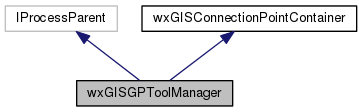

|
|
Version: 0.5.0 |


Classes |
Public Types |
Public Member Functions |
Protected Member Functions |
Protected Attributes |
List of all members
wxGISGPToolManager Class Reference
A Geoprocessing tools manager. More...
#include <gptoolmngr.h>
Inheritance diagram for wxGISGPToolManager:

Collaboration diagram for wxGISGPToolManager:

Classes | |
| struct | _taskprioinfo |
| struct | _toolinfo |
Public Types | |
|
typedef struct wxGISGPToolManager::_toolinfo | TOOLINFO |
|
typedef struct wxGISGPToolManager::_taskprioinfo | TASKPRIOINFO |
Public Member Functions | |
| wxGISGPToolManager (void) | |
| Class wxGISGPToolManager. | |
| virtual bool | IsOk (void) |
| virtual IGPToolSPtr | GetTool (wxString sToolName, IGxCatalog *pCatalog=NULL) |
| virtual int | Execute (IGPToolSPtr pTool, ITrackCancel *pTrackCancel=NULL) |
| virtual size_t | GetToolCount () |
| virtual wxString | GetPopularTool (size_t nIndex) |
| virtual void | StartProcess (size_t nIndex) |
| virtual void | CancelProcess (size_t nIndex) |
| virtual wxGISEnumTaskStateType | GetProcessState (size_t nIndex) |
| virtual wxDateTime | GetProcessStart (size_t nIndex) |
| virtual wxDateTime | GetProcessFinish (size_t nIndex) |
| virtual int | GetProcessPriority (size_t nIndex) |
| virtual void | SetProcessPriority (size_t nIndex, int nPriority) |
| virtual IGPToolSPtr | GetProcessTool (size_t nIndex) |
| virtual void | OnFinish (IProcess *pProcess, bool bHasErrors) |
 Public Member Functions inherited from wxGISConnectionPointContainer Public Member Functions inherited from wxGISConnectionPointContainer | |
| virtual long | Advise (wxEvtHandler *pEvtHandler) |
| virtual void | Unadvise (long nCookie) |
Protected Member Functions | |
| virtual int | GetPriorityTaskIndex () |
| virtual bool | ExecTask (WXGISEXECDDATA &data, size_t nIndex) |
| virtual void | AddPriority (int nIndex, int nPriority) |
| virtual void | RunNextTask (void) |
| Protected Member Functions inherited from wxGISConnectionPointContainer | |
| virtual void | PostEvent (wxEvent &event) |
| virtual void | QueueEvent (wxEvent *event) |
Protected Attributes | |
| std::multimap< int, wxString > | m_ToolsPopularMap |
| std::map< wxString, TOOLINFO > | m_ToolsMap |
| std::vector< WXGISEXECDDATA > | m_ProcessArray |
| std::vector< TASKPRIOINFO > | m_aPriorityArray |
| short | m_nMaxTasks |
| short | m_nRunningTasks |
| wxString | m_sGeoprocessPath |
| bool | m_bIsOk |
| Protected Attributes inherited from wxGISConnectionPointContainer | |
| wxVector< wxEvtHandler * > | m_pPointsArray |
Detailed Description
A Geoprocessing tools manager.
Hold the geoprocessing tools list, execute tools, track tool execution statistics
The documentation for this class was generated from the following files:
- D:/work/projects/wxGIS/include/wxgis/geoprocessing/gptoolmngr.h
- D:/work/projects/wxGIS/src/geoprocessing/gptoolmngr.cpp
- Generated on Mon Oct 28 2013 04:47:58 for wxGIS by
 1.8.5
1.8.5